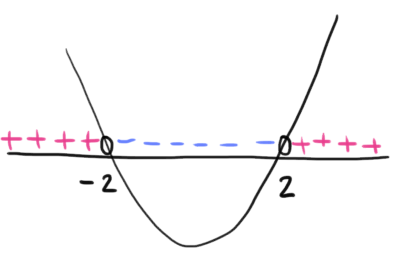

Dominio
La funzione è definita se il denominatore della frazione è diverso da \(0\)
\[
x^2 - 4 \neq 0 \,\,\,\Rightarrow\,\,\, x^2 \neq 4 \,\,\,\Rightarrow\,\,\, x \neq \pm 2
\]
Il dominio è
\[
D = (-\infty\,,\,\,-2) \cup (-2\,,\,\,2) \cup (2\,,\,\,+\infty)
\]
Segno
Studiamo per quali valori \(x \in D\) si ha \(f(x \gt 0)\), ovvero
\[
\dfrac{\left|x\right|}{x^2 - 4} \gt 0
\]
Osserviamo che il numeratore è sempre positivo (è un modulo). La frazione è positiva a patto che lo sia
il denominatore.
\[
x^2 - 4 \gt 0
\]
Risolvendola con il metodo della parabola otteniamo che

Si ha che \(f(x) \gt 0\) per valori \(x \in (-\infty\,,\,\,-2) \cup (2\,,\,\,+\infty)\)
Osserviamo che la funzione assume valore \(0\) se si annulla il numeratore
\[
\dfrac{\left|x\right|}{x^2 - 4} = 0 \,\,\,\Leftrightarrow\,\,\, \left|x\right| = 0 \,\,\,\Leftrightarrow\,\,\, x = 0
\]
Riassumendo la funzione è
-
positiva per \(x \in (-\infty\,,\,\,-2) \cup (2\,,\,\,+\infty)\)
-
nulla per \(x \in \{0\}\)
-
negativa per \(x \in (-2\,,\,\,2)\)
Comportamento in prossimità degli estremi del dominio - ricerca asintoti
Calcoliamo i limiti per
\[
x \to -\infty \quad x \to -2^{\pm} \quad x \to 2^{\pm} \quad x \to +\infty
\]
\[
\begin{align*}
\lim_{x \to -\infty} \dfrac{\left|x\right|}{x^2 - 4} &=
\lim_{x \to -\infty} \dfrac{-x}{x^2 - 4} =
\\\\
&= \lim_{x \to -\infty} \dfrac{-x}{x^2} =
\\\\
&= \lim_{x \to -\infty} \dfrac{-1}{x} =
\\\\
&= \dfrac{-1}{-\infty} = 0
\end{align*}
\]
\[
\begin{align*}
\lim_{x \to +\infty} \dfrac{\left|x\right|}{x^2 - 4} &=
\lim_{x \to +\infty} \dfrac{x}{x^2 - 4} =
\\\\
&= \lim_{x \to +\infty} \dfrac{x}{x^2} =
\\\\
&= \lim_{x \to +\infty} \dfrac{1}{x} =
\\\\
&= \dfrac{1}{+\infty} = 0
\end{align*}
\]
La funzione ha come asintoto orizzontale l'asse delle \(x\), sia per \(x \to +\infty\)
che per \(x \to -\infty\).
\[
\begin{align*}
\lim_{x \to \pm2} \dfrac{\left|x\right|}{x^2 - 4}
&= \dfrac{\left|\pm2\right|}{(\pm2)^2 - 4}
\\\\
&= \dfrac{2}{4 - 4}
\\\\
&= \dfrac{2}{0} = \infty
\end{align*}
\]
Avvicinandosi a \(-2\) e \(2\) da destra o sinistra otteniamo comunque che la funzione diverge. Guardando il
al segno della funzione possiamo essere più precisi:
\[
\lim_{x \to -2^{-}} f(x) = \lim_{x \to 2^{+}} = +\infty
\]
\[
\lim_{x \to -2^{+}} f(x) = \lim_{x \to 2^{-}} = -\infty
\]
La funzione ha come asintoti verticali le rette \(x = -2\) e \(x = -2\)
Continuità
La funzione è continua in \(D\) in quanto rapporto di funzioni continue.
\[
C = D = (-\infty\,,\,\,-2) \cup (-2\,,\,\,2) \cup (2\,,\,\,+\infty)
\]
Derivabilità
Calcoliamo la derivata della funzione
\[
\begin{align*}
\Big[\dfrac{\left|x\right|}{x^2 - 4}\Big]'
&= \dfrac{\frac{\left|x\right|}{x} \cdot (x^2 - 4) - \left|x\right| \cdot 2x}{(x^2 - 4)^2}
\\\\
&= \dfrac{\left|x\right| \left[\frac{1}{x} \cdot (x^2 - 4) - 2x\right]}{(x^2 - 4)^2}
\\\\
&= \dfrac{\left|x\right|}{(x^2 - 4)^2} \left[\frac{1}{x} \cdot (x^2 - 4) - 2x\right]
\\\\
&= \dfrac{\left|x\right|}{(x^2 - 4)^2} \left[\frac{x^2 - 4}{x} - 2x\right]
\\\\
&= \dfrac{\left|x\right|}{(x^2 - 4)^2} \left[\frac{x^2 - 4 - 2x^2}{x} \right]
\\\\
&= \dfrac{\left|x\right|}{(x^2 - 4)^2} \cdot \frac{-x^2 - 4}{x}
\end{align*}
\]